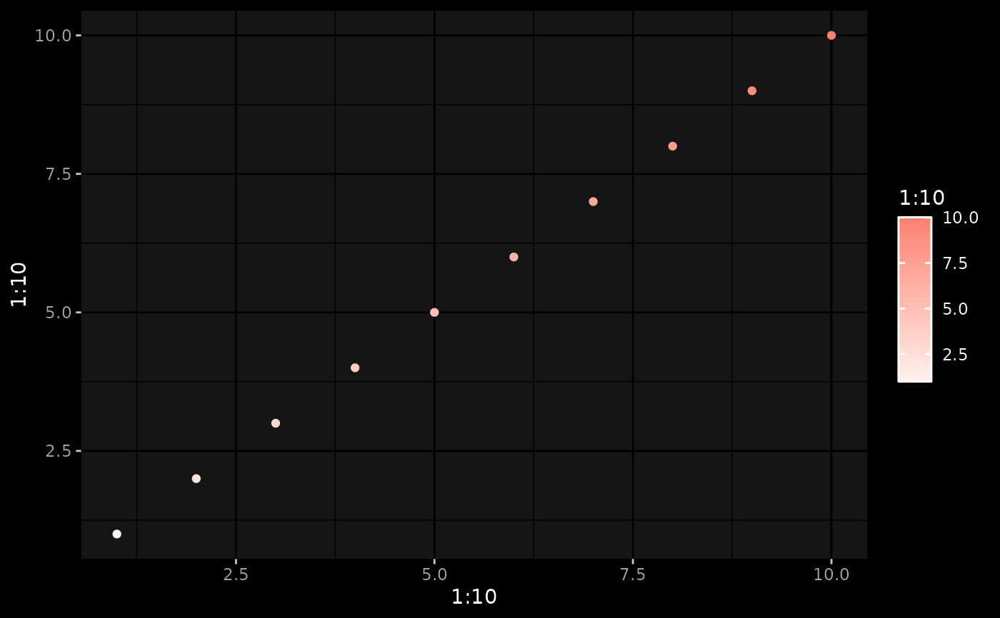
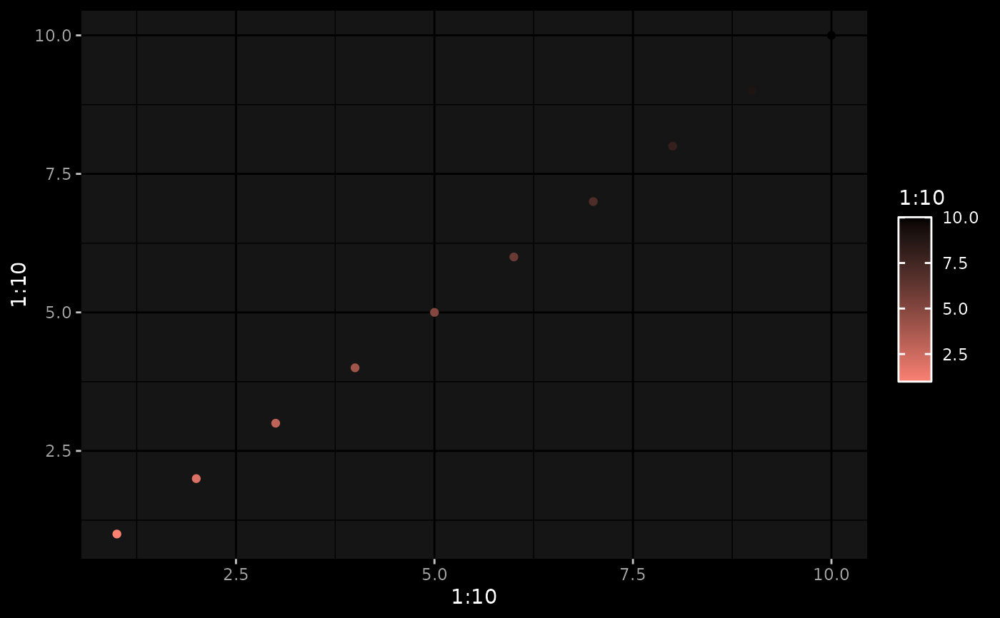

Controls the default weighting and direction of the color gradient
derived from the fg, bg, and accent color (defined in thematic_on()).
sequential_gradient(fg_weight = 0.9, bg_weight = 0, fg_low = TRUE, n = 30)
Arguments
| fg_weight | a number (between 0 and 1) defining much of the |
|---|---|
| bg_weight | a number (between 0 and 1) defining much of the |
| fg_low | if |
| n | number of color codes. |
Value
a list of options for passing to the sequential argument of thematic_on().
Examples
# Gradient from fg to accent fg <- sequential_gradient(1, 0) thematic_on("black", "white", "salmon", sequential = fg) ggplot2::qplot(1:10, 1:10, color = 1:10)# Gradient from accent -> bg bg <- sequential_gradient(0, 1) thematic_on("black", "white", "salmon", sequential = bg) ggplot2::qplot(1:10, 1:10, color = 1:10)# Gradient from mix(accent, fg, 0.5) -> mix(accent, bg, 0.5) mix <- sequential_gradient(0.5, 0.5) thematic_on("black", "white", "salmon", sequential = mix) ggplot2::qplot(1:10, 1:10, color = 1:10)# Use fg (instead of bg) for high end of scale mix_flip <- sequential_gradient(0.5, 0.5, fg_low = FALSE) thematic_on("black", "white", "salmon", sequential = mix_flip) ggplot2::qplot(1:10, 1:10, color = 1:10)